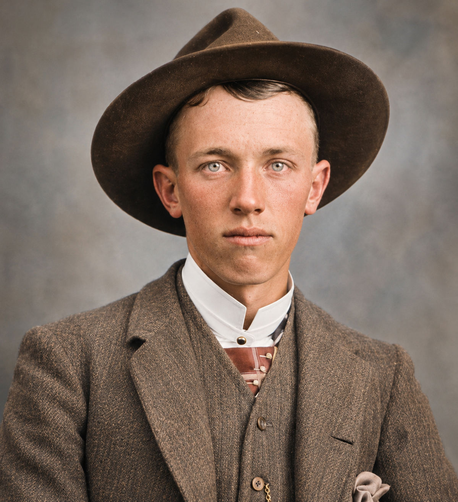

Downard family · Person
John Louis Downard
1869–1944

- Born
- September 6, 1869 · Spring City, Utah
- Died
- September 23, 1944 · Price, Utah
- Burial
- Price City Cemetery, Price, Utah
- Occupations
- Ranching
Born in Spring City, Utah, John Louis later lived in Price. He married Angeline Rebecca King in 1896; after her death in 1913, he married Minnie Estella Thompson Rogers in 1915 and Gertrude Elenor Miller in 1923.
Newspaper excerpts connect John to ranching around Woodside and Nine Mile. A published marriage-license notice places John and Minnie in Harper in 1915. The archive keeps undated land reports separate from dated life events.
Family connections
Parents George Downard, Mary Emma Carlisle
Grandparents Catharine “Kitty” Welch, Jane Finder, William Downard, William John Carlisle
Spouses and partners Angeline Rebecca King, Gertrude Elenor Miller, Minnie Estelle Thompson Rogers Downard
Children with Angeline Rebecca King: Angelina Downard, Manual Louis Downard, Walter William Downard
Siblings Alice Downard (Half-sibling) · Cecelia Downard (Half-sibling) · Edward Hiram Downard (Half-sibling) · Emma Jane Downard (Full sibling) · George Frederick Downard (Half-sibling) · Hiram Downard (Half-sibling) · John B. Downard (Half-sibling) · Joseph Downard (Half-sibling) · Sarah Ann Downard (Half-sibling) · William Downard (Full sibling)
Relationship evidence
- Marriage · Angeline Rebecca King · Reported by FamilySearch
- Event date
- 1896-10-31
- Place
- Price, Utah
Sources · Existing Downard family archive · FamilySearch profile · John Louis Downard
- Marriage license reported · Minnie Estelle Thompson Rogers Downard · Documented in supplied excerpt
- Source publication date
- 1915-04-29
- Place
- Harper, Utah
Sources · John L. Downard and Minnie E. Rogers marriage-license notice
- Marriage · Gertrude Elenor Miller · Reported by FamilySearch
- Event date
- 1923-12-22
- Place
- Salt Lake City, Utah
Sources · Existing Downard family archive · FamilySearch profile · John Louis Downard
Places Spring City, Utah, Woodside, Utah, Nine Mile Canyon, Harper, Utah, Price, Utah
Properties Woodside ranch · Nine Mile property lead · Section 27 warranty deed · Section 27 deed references involving Burt and Wilson
Timeline John Louis Downard born · Marriage license notice for John and Minnie · Duchesne Record lists civil case No. 83 · Newspaper reports John’s move to Nine Mile · Newspaper abstracts a Section 27 warranty deed
Stories John Louis Downard and the Ranches of Eastern Utah · Minnie Thompson: From Nine Mile to Rochester
Research questions Locate the Section 27 warranty deed · Date John’s Woodside and Nine Mile reports · Tragedy at the Woodside Ranch · Locate Duchesne civil case No. 83
Sources · Death certificate associated with John Louis Downard · John L. Downard and Minnie E. Rogers marriage-license notice · Woodside ranch sale report · John Downard’s move to Nine Mile · Bluebell report on proposed property negotiations · Harness to Downard warranty deed abstract · Downard to Burt and Wilson to Harness deed abstracts · Duchesne Record civil listing No. 83 · FamilySearch profile · John Louis Downard